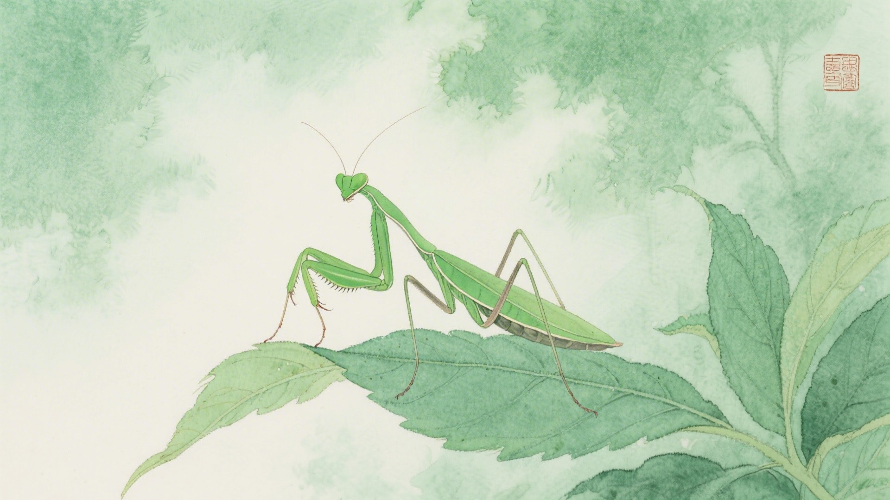
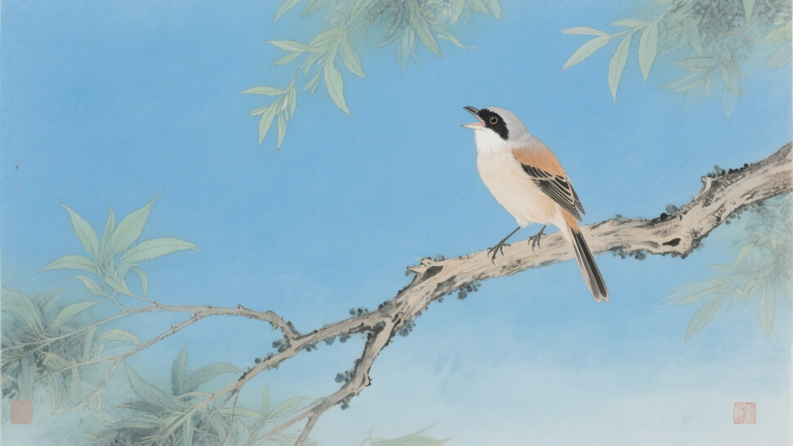
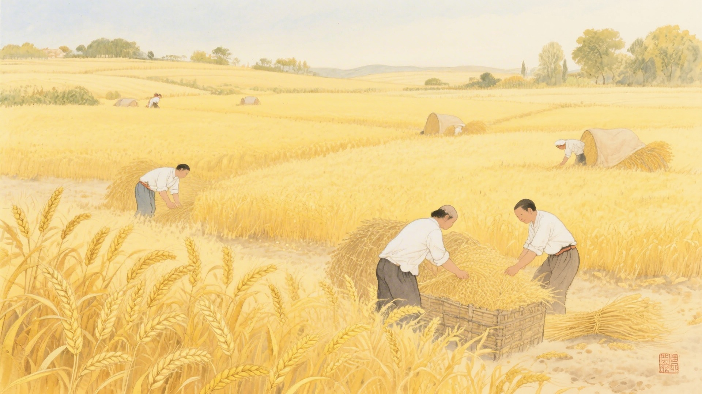
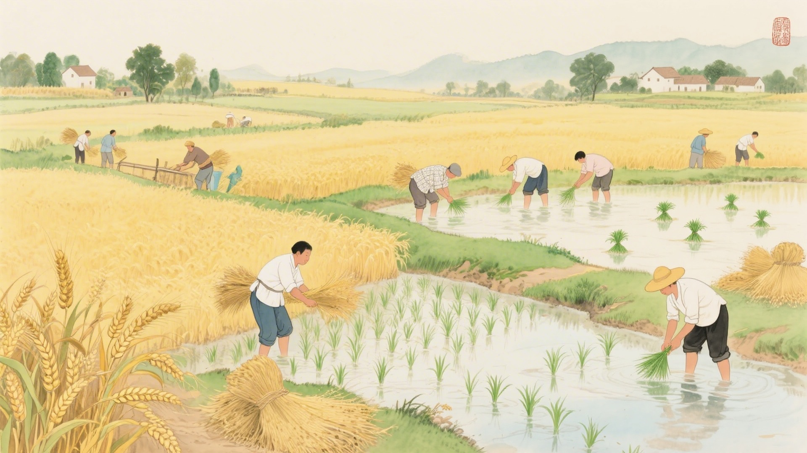

《中国传统色：故宫里的色彩美学》一书中为什么把下面这些颜色归入芒种节气？
筠雾、瓷秘、琬琰、青圭
鸣珂、青玉案、出岫、风入松
如梦令、芸黄、金埒、雌黄
曾青、䒌靘、璆琳、瑾瑜
芒种时节，螳螂破壳而出，伯劳鸟开始鸣叫，反舌鸟不叫了。古人说芒种有三候：螳螂生，鵙始鸣，反舌无声。这十六种颜色，便从这三候里来。
芒种的"芒"，是有芒的作物要收了；"种"，是有芒的作物要种了。一边收，一边种，农人最忙的时候。颜色也忙，忙着从金黄变青，忙着从青变黄，忙得不亦乐乎。
对应：芒种节气一候"螳螂生"的起、承、转、合四色。
色彩意象：螳螂初生，通体青绿。
从淡青到深青，是螳螂从幼虫到成虫的色彩变化，也是芒种时节竹林、水面、林间层层叠叠的青绿色彩。

对应：芒种节气二候"鵙始鸣"的起、承、转、合四色。
色彩意象：伯劳鸟鸣，声声入耳。
这一组青色系，是伯劳鸟鸣叫时的天空、云彩、松林交织的色彩。

对应：芒种节气三候"反舌无声"的起、承、转、合四色（其一）。
色彩意象：麦田一片金黄。
从淡黄到金黄，是麦子从成熟到收割的色彩变化，也是芒种时节最耀眼的丰收画卷。

对应：芒种节气三候"反舌无声"的起、承、转、合四色（其二）。
色彩意象：夏日的天空和宝石。
从深青到青黑，是夏日天空从明亮到深沉的色彩变化，也是芒种时节宝石美玉的璀璨光泽。
芒种是最忙的节气。收麦子，种稻子，前后脚的事。颜色也跟着忙，一边是金黄的麦浪，一边是青绿的秧苗。金和青，在这个节气里交替着登场。

颜色也懂得忙碌。它们在田野里跑来跑去，一会儿染麦子，一会儿染秧苗，一会儿染天，一会儿染地。忙完这一茬，还有下一茬。
（以上解读不代表原书观点）